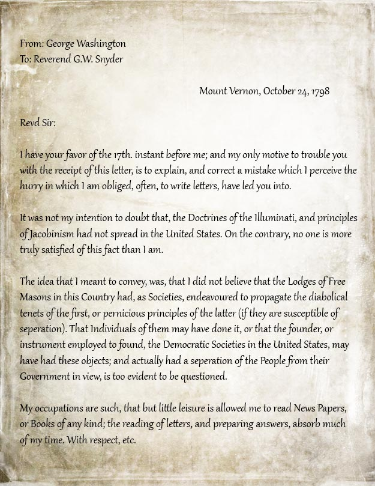

The term "Illuminati" refers to an actual secret society from 1776, the Bavarian Illuminati. The Illuminati came into being on May 1. Not much is known about the group, but initially it had five members that would go on to include dukes and literary men in Bavaria—who opposed the Roman Catholic Church's power over science and philosophy. They wanted to free themselves from the church and restrictions of the government. This is the Age of Enlightenment too, so they also wanted to "enlighten" people about their superstitions and prejudices.
Like most secret societies, they didn't stay very "secret" for long, and people started talking about the mission of the group. Some believed they were behind the French Revolution and had their eyes on other governments to take down.
They used symbols (like the triangle with the eye in it, which is called....), used fake names (to avoid identification), and had complicated hierarchies like Novice, Minerval, and Illuminated Minerval that divided the ranks. In the beginning, Illuminati members didn't trust anyone over 30, because they were too set in their ways. What happened at the rituals are hard to confirm, but we know that members were very paranoid and used spy-like protocol to keep one another's identities secret. While they were following these bizarre rituals, they also promoted a worldview that reflected Enlightenment ideals like rational thought and self-rule. The Illuminati was closer to revolutionaries than world rulers, since they sought to upset powerful institutions, like the monarchy.
Almost immediately after the Illuminati were disbanded, conspiracy theories about the group sprang up. Even George Washington, in 1798, wrote a letter addressing the Illuminati threat.
Even Thomas Jefferson was (baselessly) accused of being a member of the group. Though these early Illuminati panics died down, they gave the group a patina of legitimacy that, later on, would help make a centuries-long conspiracy seem more plausible.
Curently, many theroists believe that celeberties and political figures are in the secret society to this day. (Beyoncé, Britney Spears, George W. Bush, and John F. Kennedy) Theroists believe that it lived on and that it is running the world without anyone knowing it. The illuminati even has a website, where people can go to join. (below)
Illuminati Website
Video about the Illuminati